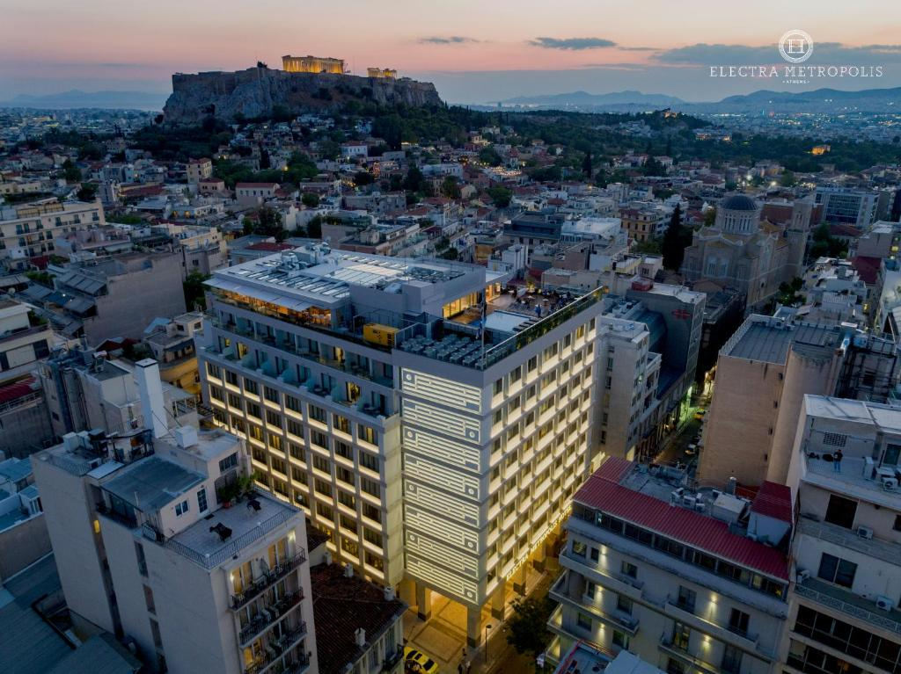
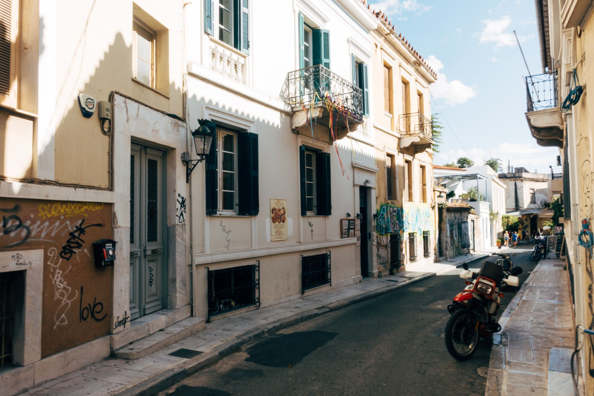
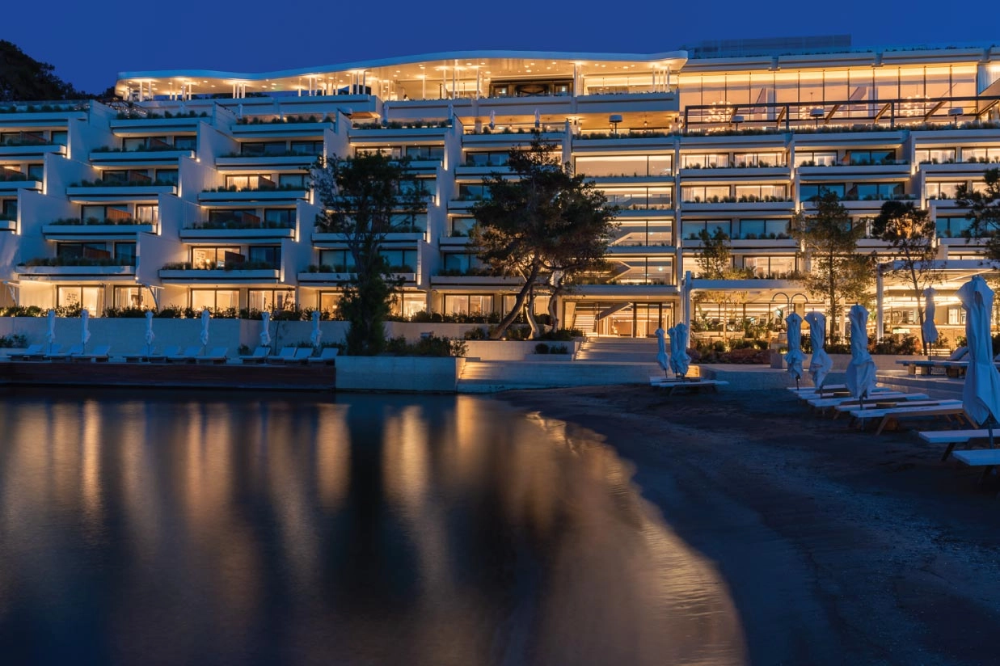

Η Αθήνα, πρωτεύουσα της Ελλάδας, υποδέχεται τους επισκέπτες της με μια εκπληκτική ποικιλία επιλογών για διαμονή που αντανακλούν τον χαρακτήρα και την πολυπολιτισμική φύση της πόλης. Από πολυτελή ξενοδοχεία με θέα στην Ακρόπολη και παραδοσιακά boutique ξενοδοχεία στα ιστορικά κέντρα, μέχρι μοντέρνα καταλύματα σε παραθαλάσσιες περιοχές, η Αθήνα παρέχει επιλογές για κάθε γούστο και προτίμηση. Στην καρδιά της πόλης ή δίπλα σε παραθαλάσσιες περιοχές, η διαμονή στην Αθήνα υπόσχεται μια μοναδική εμπειρία που ενσωματώνει την κοσμοπολίτικη αίγλη με την παράδοση.'Ετσι μπορούμε να σας προτείνουμε ορισμένες επιλογές:
Electra Metropolis Hotel
Σε στρατηγική τοποθεσία στην αρχή της οδού Μητροπόλεως, το ξενοδοχείο βρίσκεται σε απόσταση αναπνοής από την πλατεία Συντάγματος, το κέντρο της αθηναϊκής ζωής με τον ομώνυμο σταθμό του Μετρό. Βρίσκεται επίσης δίπλα στην οδό Ερμού, τον κύριο εμπορικό δρόμο της Αθήνας – αλλά και δίπλα στη νέα πρωτεύουσα φαγητού της Αθήνας, με ακαταμάχητες προτάσεις γαστρονομίας που περιμένουν να τις απολαύσετε. Σε κοντινή απόσταση και σε κοντινή απόσταση οι επισκέπτες μπορούν να βρουν την πολυτελή γειτονιά του Κολωνακίου καθώς και την παραδοσιακή γειτονιά της Πλάκας, που ξεκουράζονται χαλαρά στους πρόποδες της Ακρόπολης. Οι επισκέπτες δεν μπορούν να επιλέξουν, με μουσεία, καταστήματα, καφετέριες και επιλογές για φαγητό σε εντυπωσιακή πυκνότητα. Το Electra Metropolis Hotel γεφυρώνει ένα ένδοξο παρελθόν με ένα συναρπαστικό μέλλον, σε ένα σπάνιο μείγμα διαχρονικής νεωτερικότητας. Είναι γεμάτο χαρακτήρα και προσοχή στη λεπτομέρεια, ενώ διαθέτει αρχιτεκτονικά, σχεδιαστικά και καλλιτεχνικά στοιχεία που ξεχωρίζουν. Αρχιτεκτονικό ορόσημο και προορισμός από μόνο του, το κτίριο σχεδιάστηκε από τον διάσημο αρχιτέκτονα Πάτροκλο Καραντινό και αποτελεί ένα εξαιρετικό υπόδειγμα του ελληνικού μοντερνισμού με τοπικές εκλεκτικές αναφορές. Κατά τη μετατροπή του κτιρίου σε ξενοδοχείο, το αρχικό πνεύμα της δημιουργίας διατηρήθηκε ανέπαφο δίνοντας ζωή σε ένα ρετρό σικ φάρο που λάμπει. Και υπάρχουν περισσότερα στις καλλιτεχνικές δονήσεις. Δύο μοναδικές δημιουργίες κυριαρχούν στο σκηνικό: η πρώτη είναι μια εγκατάσταση από ασημένιες μέλισσες στον λαμπερό αθηναϊκό ουρανό από τον διάσημο Έλληνα καλλιτέχνη Αλέκο Φασιανό, η δεύτερη μια σύνθεση από μαρμάρινα κομμάτια δουλεμένα με διαφορετικές τεχνικές ώστε να δημιουργηθεί ένα σαγηνευτικό αποτέλεσμα που ξεπερνά χρόνος. Όμως οι εκπλήξεις δεν σταματούν εκεί. Στα θεμέλια του κτηρίου οι επισκέπτες μπορούν να θαυμάσουν τα ερείπια του Τείχους του Θεμιστοκλή, του πρωταρχικού αμυντικού μέσου της Αθήνας της Κλασικής Εποχής. Κυριολεκτικά στην κορυφή αυτού, υπάρχει επίσης το παρεκκλήσι της Αγίας Δύναμης του 16ου αιώνα, ενσωματωμένο στη δομή του κτιρίου σε μια εξαιρετική περιπλοκή. Το σκηνικό έχει ρυθμιστεί για μια πραγματικά αξέχαστη διαμονή. Το ξενοδοχείο διαθέτει συνολικά 216 πλήρως εξοπλισμένα, κομψά δωμάτια και σουίτες, το καθένα με πλήρη πρόσβαση WiFi και τη δική του τηλεόραση Smart LED. Η προηγμένη ηχομόνωση και ο κλιματισμός δημιουργούν την ιδανική ατμόσφαιρα, αλλά αυτό που θα σας κόψει την ανάσα είναι η θέα προς την Ακρόπολη από μερικά από τα δωμάτια ή το roof garden.
Για περισσότες πληροφορίες μπορείτε να ανατρέξετε στην επίσημη ιστοσελίδα πατώντας εδώ
Shilla Athens
Το Shila είναι μια αιθέρια κατοικία στα τέλη της δεκαετίας του 1920 στην καρδιά της Αθήνας, που φέρνει νέο νόημα και έμπνευση στην ιδέα του boutique hotel. Ένα μέρος για να νιώσετε απόλαυση και να νιώσετε σαν στο σπίτι σας, αλλά ταυτόχρονα, να βιώσετε ένα απόκοσμο βασίλειο κομψότητας και αισθησιασμού. Συνδυάζοντας στοιχεία του παρελθόντος και του σύγχρονου – και θυμίζει ιδιαιτερότητα ξενοδοχείου – αυτή η νεοκλασική κατοικία αποτελείται από έξι ξεχωριστά σχεδιασμένες σουίτες, η καθεμία μοναδική στον χαρακτήρα, με ένα ενοποιητικό στοιχείο απλότητας και σέξι γοητείας. Το Shila διαθέτει μια καταπράσινη αυλή, μια ήσυχη ταράτσα, χώρους ξαπλώστρας και γωνιές ανάγνωσης, ιδανικά για κοινωνικές συγκεντρώσεις, καλλιτεχνικές εκδηλώσεις και ιδιωτικές εκδηλώσεις. Προσφέρουμε την απόλυτη επιμελημένη εμπειρία στη μαγειρική, την τέχνη, το ντιζάιν και την απολαυστική αυτοφροντίδα. Μια πρόσκληση να ζήσετε τη διαισθητική φιλοξενία μας, όπου η Shila στέκεται ως ένα δικό της μαγνητικό σύμπαν.
Επισκεφτείτε την επίσημη ιστοσελίδα πατώντας εδώ
Four Seasons Astir Palace Hotel
Το Four Seasons Astir Palace Hotel αποτελεί έναν παράδεισο πολυτέλειας και υψηλής φινέτσας, προσφέροντας μια εξαιρετική εμπειρία διαμονής. Με την κομψή του αρχιτεκτονική και τις εκπληκτικές εγκαταστάσεις, το κατάλυμα αντικατοπτρίζει την αίγλη και τον πολυτελή χαρακτήρα που συνδέεται με τη φήμη του Four Seasons. Με εκθαμβωτική θέα στο Αιγαίο Πέλαγος, πολλές πισίνες, εξαιρετικά εστιατόρια και εξατομικευμένες υπηρεσίες, το ξενοδοχείο προσφέρει μια μοναδική συνδυασμό άνεσης και πολυτέλειας. Είναι ένας προορισμός που αναδεικνύει την έννοια της πολυτέλειας και αναμφίβολα παρέχει στους επισκέπτες μια αξέχαστη εμπειρία πολυτελούς φιλοξενίας.